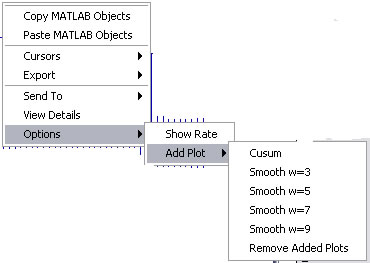

Peri-event time histogram (PETH)
Email: sigtool@kcl.ac.uk

Email: sigtool@kcl.ac.uk
Author: Malcolm Lidierth
Updated: June 2008
A peri-event time histogram provides an estimate of the probability of observing an event as a function of time following a trigger event, typically a stimulus marker. By default, results are returned as events/sweep (~probability, but note that there is no upper limit of unity). Results can subsequently be normalized relative to the bin width to give the result in events/second (rate).
Select the trigger channels in the Channel A selector and source channels using the Channel B selector. Any channels with multiple events can be selected.
Sets the timebase for the resulting event autocorrelations and the bin width to use (in seconds)
Sets the pre-time as a percentage of the duration.
By default, all triggers will be used. To generate multiple correlations each with a fixed number of sweeps set Sweeps per Average to a number less than the total number of available triggers. The result will be presented as a 3-D histogram.
The Retrigger checkbox is unselected by default: triggers that fall before the end of a preceding sweep will be ignored.
Checking the Retrigger box will cause triggers that fall during a preceding sweep to be used to trigger a subsequent sweep.
Right-click the mouse on the plotted result to display a context-senstive menu. Menu options include the ability to toggle between plotting events/sweep and event rate, to superimpose a cumulative sum (cusum; see Ellaway 1978) plot and to add a smoothed plot of the data (smoothed with a Gaussian with a width of w bins).

The cusum method subtracts the mean value calculated from a control period from each bin of the PETH, then plots the cumulative sum of the result. The control period used by default is the first half of the pre-stimulus period of the PETH e.g. with a pre-time period from -100 to 0ms, the bins in the range -100 up to -50ms would be used. A pre-time period must be present.
Smoothing applies a filter to the result using an odd-length Guassian window of width w and standard deviation of 0.5 [equivalent to gausswin(w, 1/0.5) with the MATLAB Statitics Toolbox].
Ellaway, P.H. (1978) Cumulative sum technique and its application to the analysis of peristimulus time histograms. Electroencephalography and Clinical Neurophysiology 45, 302-304 [Link]
© The Author and King's College London, 2008-